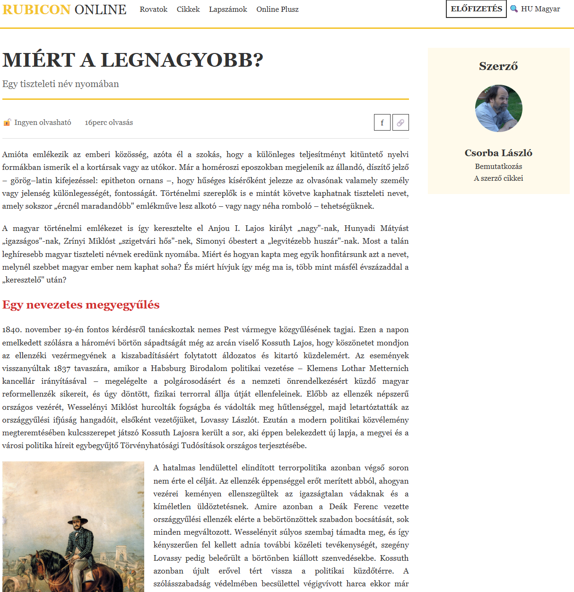
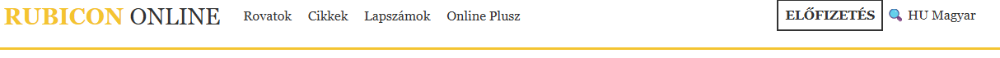
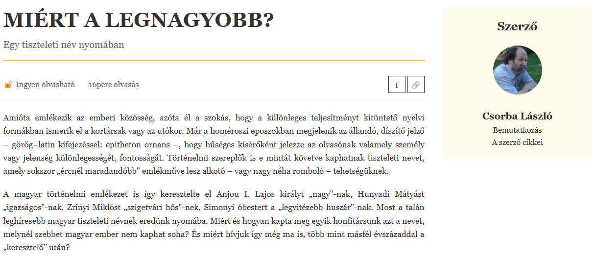
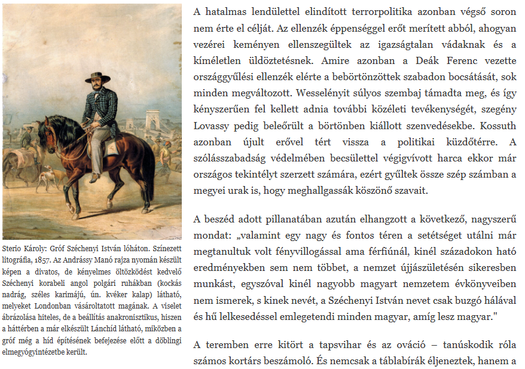

Rubicon cikk oldal
Célkitűzés
Egy híroldalhoz hasonló cikk oldal létrehozása, amely lehetőséget ad az eddigiek gyakorlására. Az oldalon egy header menüt, kétoszlopos tartalmat és lebegő képet fogunk formázni.

Note
Ne feledd: A cél nem a pixel-pontos másolás, hanem a gyakorlás. Ha valami kicsit másképp néz ki, mint a referencia, az rendben van, amíg az alapelvek helyesek.
Kiindulási fájlok
Töltsd le a rubicon_article_alap.html fájlt a Moodle-ről! Ez tartalmazza az oldal HTML vázát, de még nincsenek rajta osztálynevek és formázások.
1. Előkészületek és alapbeállítások
1.1 Univerzális reset és body beállítások
Kezdd a CSS-t úgy, hogy minden elemet nullázol (margin, padding), és beállítod a box-sizing: border-box tulajdonságot.
Ezután a body elemre állítsd be:
- A betűtípust (Georgia vagy más serif)
- A sortávolságot (legyen kényelmesen olvasható, 1.5-1.8 körüli érték)
- A szöveg színét (sötétszürke)
- A háttérszínt (fehér)
2. Header elkészítése float elrendezéssel

2.1 Header alap formázása
A header elem számára:
- Adj alsó szegélyt, ami 3 pixel vastag és arany színű (a sárga árnyalata:
#f4c430) - Adj belső térközt felül-alul (15 pixel körül)
- Kritikus: Állítsd be a
displaytulajdonságátflow-rootértékre, hogy a benne lebegő elemek ne "lógjanak ki" belőle
Note
Miért kell a flow-root? Amikor float-okat használsz, azok "kikerülnek" a normál dokumentumfolyamból. A flow-root biztosítja, hogy a konténer magassága igazodjon a float elemekhez.
2.2 Header konténer (szélesség korlátozás)
Most szükségünk van egy osztályra a header-en belüli div számára, hogy korlátozhassuk a szélességet és középre igazíthassuk.
Először: Adj egy header-container osztályt a header-en belüli első div-nek a HTML-ben.
Ezután a CSS-ben: Erre az osztályra írj szabályt:
- Maximális szélességet állíts be (1200 pixel)
- Középre igazítás: használd a margin tulajdonságot 0 értékkel felül-alul, és auto értékkel oldalt
2.3 Logó formázása
A RUBICON ONLINE linkre külön formázást szeretnénk.
Először: Adj egy logo osztályt ennek a linknek a HTML-ben.
Ezután a CSS-ben: A logó link számára:
- Float-old balra! Ez az első lebegő elem.
- Nagyobb betűméret (25-30 pixel körül)
- Vastag betű
- Arany szín (
#f4c430) - Távolítsd el az alapértelmezett link aláhúzást
- Adj jobb oldali margót, hogy ne érjen hozzá a mellette lévő elemhez (20 pixel)
A logón belüli span elem (ami az "ONLINE" szót tartalmazza) legyen más színű:
- Legyen sötétszürke
- Normál betűvastagság (nem vastag)
2.4 Navigáció pozicionálása
A nav elem is lebegjen balra, így a logó mellé kerül. Ehhez:
- Float balra
- Adj belső térközt felül-alul, hogy függőlegesen középen legyen (8 pixel)
- Állítsd be a sormagasságot is a logóéhoz hasonlóra (28 pixel körül)
A nav-on belüli linkek számára:
- Legyenek inline-block elemek
- Távolítsd el az aláhúzást
- Adj oldalsó margót, hogy szép távolság legyen közöttük (8-10 pixel)
- Színük legyen sötétszürke
2.5 Jobb oldali elemek (misc)
Most a header jobb oldalán lévő elemekre van szükségünk (ELŐFIZETÉS gomb, keresés, nyelv).
Először: Adj egy misc osztályt annak a div-nek, amely ezeket az elemeket tartalmazza.
Ezután a CSS-ben: Ez a div:
- Float-old jobbra! Ez kerül a másik oldalra.
- Adj belső térközt (8 pixel felül-alul, 20 pixel oldalt)
A benne lévő linkeknek:
- Távolítsd el az aláhúzást
- Sötétszürke szín
2.6 Előfizetés gomb kiemelése
Az ELŐFIZETÉS link legyen gomb kinézetű.
Először: Adj egy subscribe osztályt az ELŐFIZETÉS linknek.
Ezután a CSS-ben:
- Sötétszürke szöveg és keret (2 pixel vastag, tömör vonal)
- Belső térköz a szöveg körül (8-10 pixel)
- Vastag betű
- Hover állapotban: arany háttérszín (használd a
:hoverpszeudo-osztályt!)
3. Main tartalom kétoszlopos elrendezése float-tal

3.1 A main elem és szélesség beállítása
A main elemet most float-okkal fogod két oszlopra osztani, így az article és az aside egymás mellé kerül.
Állítsd be a main elemre:
- Maximális szélesség (1200 pixel)
- Középre igazítás (margin auto oldalt)
- Felső margó (40 pixel)
- Display: flow-root - ez biztosítja, hogy a main elem magassága igazodjon a benne lebegő elemekhez (article és aside)
3.2 Article pozicionálása
Az article elemet balra kell lebegtetni. Ehhez:
- Float balra
- Szélesség beállítása: ezt okosan kell kiszámolni. Ha az aside 300 pixel széles lesz, és szeretnénk közéjük 40 pixel térközt, akkor az article-nek a maradék helyet kell elfoglalnia.
- Első megoldás (egyszerűbb): Adj meg körülbelül 70% szélességet
- Második megoldás (pontosabb): Használd a
calc()függvényt: a teljes szélességből (100%) vonj ki 300 pixelt (aside) és 40 pixelt (gap), tehát:calc(100% - 340px)
Melyiket válaszd? A calc() pontosabb, de ha egyszerűbb megoldást szeretnél, a 70% is jól működik (ebben az esetben az aside majd "kiszorítja" a helyét).
3.3 Aside pozicionálása
Az aside elemet jobbra kell lebegtetni:
- Float jobbra
- Fix szélesség: 300 pixel
3.4 Mi történik?
Amikor mindkét elem float-ol (egyik balra, másik jobbra), akkor:
- Az article elfoglalja a bal oldalt (a megadott szélességgel)
- Az aside a jobb oldalra kerül (300 pixel szélességgel)
- A köztük lévő hely automatikusan térközként fog működni, ha jól számoltad ki a szélességeket
Note
Ha az article szélességét 70%-ra állítod, akkor automatikusan marad 30% az aside-nak és a térköznek. Ha az aside 300px és a main max-width 1200px, akkor 300px az 25%, így marad 5% térköz (ami 60 pixel 1200px szélesség esetén).
Ha calc()-ot használsz: Az article pontosan annyi helyet foglal, amennyi marad az aside és a gap után, így garantáltan jól fog kinézni.
3.5 Tesztelés
Miután beállítottad mindkét float-ot:
- Ellenőrizd, hogy az article és aside egymás mellett vannak-e
- Ha az aside "lecsúszik" az article alá, akkor valószínűleg az article túl széles (csökkentsd a szélességét)
- Ha túl nagy a rés közöttük, csökkentsd az article szélességét
- Ha túl kicsi a rés, növeld az article szélességét vagy adj neki jobb oldali margót
Alternatív megoldás térköz létrehozására:
Ahelyett, hogy a szélességekkel játszanál, adhatsz az article-nek jobb oldali margót (40 pixel), és akkor az article szélessége lehet calc(100% - 340px) vagy akár fix pixel érték is (pl. 860px, ha 1200px - 300px - 40px = 860px).
4. Cikk fejléc és meta információk
4.1 Főcím (h1) és alcím (h2)
Az article-n belüli címek formázásához használj gyerek szelektort: main > article > h1 és main > article > h2
A főcím (h1) számára:
- Nagy betűméret (40-45 pixel)
- Vastag betű
- Alsó margó (10 pixel)
- Csökkentett sormagasság (1.2 körül), hogy a többsoros címek ne legyenek túl széttartva
Az alcím (h2) számára:
- Közepes betűméret (20 pixel körül)
- Normál betűvastagság
- Alsó térköz (15 pixel) és alsó szegély (arany, 3 pixel vastag)
- Halványabb szín (világosszürke,
#666)
4.2 Meta információs sáv
A meta információkat (ingyen olvasható, 16 perc olvasás, share gombok) tartalmazó div-nek szüksége van formázásra.
Először: Adj egy meta osztályt ennek a div-nek.
Ezután a CSS-ben:
- Alsó szegély (vékony, 1 pixel, világosszürke
#ddd) - Flow-root display (mert benne float elemek lesznek)
- Felső és alsó margó (15 pixel)
- Felső és alsó belső térköz (15 pixel)
- Szürke szövegszín (#
666) - Állítsd be a sormagasságot is (35 pixel), hogy a gombok szépen igazodjanak
A meta div-en belüli span elemek:
- Jobb oldali margó, hogy szép távolság legyen közöttük (25 pixel)
4.3 Share gombok
A share gombok (f és 🔗) jobbra kell kerüljenek a sávban.
Először: Adj egy share osztályt a share gombokat tartalmazó div-nek.
Ezután a CSS-ben: Ez a div:
- Float jobbra, hogy a sáv jobb oldalára kerüljön
A share div-en belüli linkek:
- Inline-block megjelenítés
- Fix szélesség és magasság (35-35 pixel, azaz négyzet alakúak)
- Középre igazított szöveg
- Szegély (1 pixel, sötétszürke)
- A sor magasságát állítsd a magassággal megegyezőre (35 pixel), így a tartalom függőlegesen középen lesz
- Távolítsd el az aláhúzást
- Sötétszürke szín
5. Szöveges tartalom formázása
5.1 Bekezdések
A section-ökön belüli bekezdések formázására használd a section > p szelektort:
- Felső és alsó margó (20 pixel)
- Sorkizárt szöveg (így lesz szépen megtöltve a teljes szélesség, használd a
text-aligntulajdonságot) - Kissé megnövelt betűméret (17-18 pixel) a jobb olvashatóság érdekében
5.2 Szakasz címek (h3)
A section-ökön belüli h3 címekre (section > h3):
- Piros szín (
#d32f2f) - Közepes betűméret (24 pixel)
6. Kép lebegtetése float-tal

6.1 Általános kép beállítások
Az img elemek számára:
- Fix szélesség (300 pixel)
- Auto magasság (megtartja az arányt)
6.2 Figure elem pozicionálása
Itt jön a varázslat! A figure elemet balra fogod lebegtetni, így a szöveg jobbra folytatódik mellette.
A figure elem számára:
- Float balra!
- Fix szélesség (300 pixel, a képével megegyező)
- Sorkizárt szöveg (a képaláírás számára)
- Jobb oldali margó (20 pixel) - ez a kulcs, hogy a szöveg ne érjen hozzá a képhez
- Kis betűméret a képaláíráshoz (12 pixel)
Mi történik? A float miatt a kép kikerül a normál folyamból, és a szöveg "körülölelje" jobbról és alulról.
Próbáld ki: Ha később kiveszed a float-ot, látni fogod, hogy a kép "elfoglalja" a teljes sort, és a szöveg csak alatta folytatódik.
7. Szerző doboz formázása
7.1 Szerző konténer
A szerző információit tartalmazó doboznak szüksége van stílusra.
Először: Adj egy author osztályt az aside-on belüli div-nek.
Ezután a CSS-ben:
- Halvány sárga háttérszín (
#fffaeb) - Belső térköz (20 pixel)
- Középre igazított szöveg
7.2 Szerző címe
Az author osztályon belüli h3 számára (.author h3):
- Nagyobb betűméret (24 pixel)
- Vastag betű
7.3 Szerző képe
Az author osztályon belüli img számára:
- Kör alakú: használd a border-radius tulajdonságot 50%-os értékkel!
- Fix szélesség (100 pixel)
- Auto magasság
- Felső és alsó margó (20 pixel)
7.4 Szerző neve és linkek
A szerző neve (p elem az author-on belül):
- Vastag betű
- Nagyobb betűméret (20 pixel)
A linkek az author-on belül:
- Block megjelenítés (így minden link új sorban lesz)
- Nincs aláhúzás
- Sötétszürke szín
Ellenőrzési lista
- [ ] Van univerzális reset (*-os szabály)?
- [ ] A body alap stílusai be vannak állítva?
- [ ] A header-nek van arany alsó szegélye?
- [ ] A header
display: flow-roottulajdonsággal rendelkezik? - [ ] Van
header-containerosztály a HTML-ben és CSS-ben? - [ ] A logó balra float-ol, arany színű, és van jobb margója?
- [ ] A navigáció is balra float-ol?
- [ ] A
miscosztályú div jobbra float-ol? - [ ] Van
subscribeosztály az ELŐFIZETÉS gombnak? - [ ] Az ELŐFIZETÉS gombnak van hover effektje?
- [ ] A main Grid elrendezésű, két oszloppal (1fr 300px)?
- [ ] A címek megfelelően formázottak?
- [ ] Van
metaosztály és szépen néz ki a meta sáv? - [ ] Van
shareosztály és a share gombok jobbra vannak? - [ ] A figure balra float-ol és van jobb margója?
- [ ] A szöveg körülfolyja a képet?
- [ ] Az aside a második oszlopban jelenik meg automatikusan?
- [ ] Van
authorosztály az aside-on belüli div-en? - [ ] A szerző képe kör alakú?
- [ ] Az oldal hasonlít a referenciaképre?
Megoldás feltöltése
Töltsd fel a kész rubicon_article_styled.html fájlt a Moodle-re.